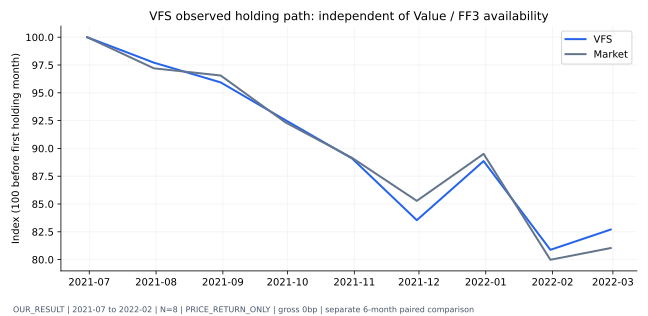
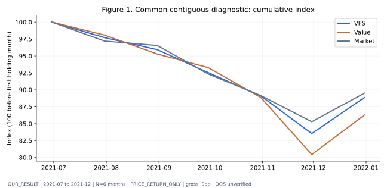
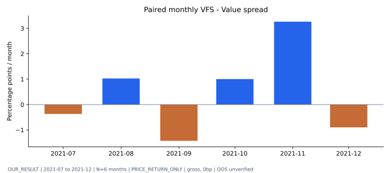
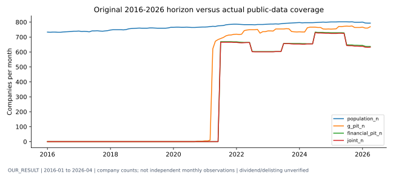
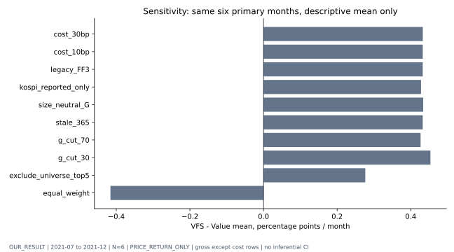
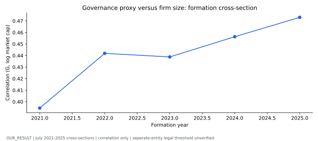
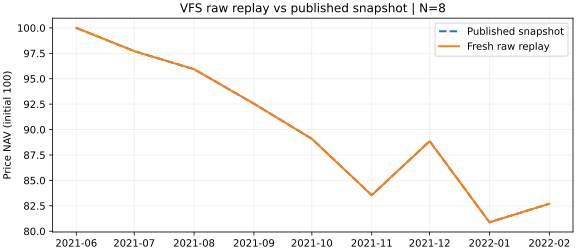
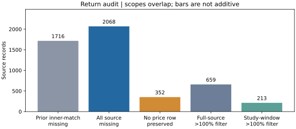
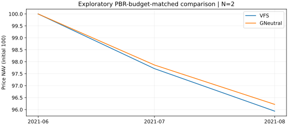

독립 개인 연구 · OUR_RESULT
Value Focus Style
공시 기반 거버넌스 가치전략의 검증
실제 공시시점 자료로 구성한 VFS의 수익률·위험·보유경로는 어떠한가?
VFS 백테스트 · 부분 관측 / EMPIRICAL_LIMITEDVFS 자체의 최장 연속 관측은 2021-07~2022-02(8개월)이며, 누적 가격수익률은 VFS -17.30%, 같은 기간 KOSPI -18.96%입니다.
Value와 동일 조건으로 비교하는 공통 연속 기간은 2021-07~2021-12(6개월)입니다. 이 기간 누적 가격수익률은 VFS -11.14%, Value -13.72%, KOSPI -10.50%이며, VFS−Value 월평균 차이는 +0.43%p입니다.
MSCI 점수 대신 사외이사 비율. PRICE_RETURN_ONLY / gross 0bp. 배당·상폐·독립 OOS 미검증. CAGR/Sharpe는 6개월의 연환산 진단치.
Narrative README · 연구 PDF · 미래에셋 원문 · 공개 월별 CSV
VFS 자체의 보유경로: 연속 8개월

Value·시장 비교: 공통 6개월

월별 VFS−Value 차이

원문 기간과 실제 자료 커버리지

강건성: 기술통계만 산출

규모와 G 프록시의 혼동

보조 검정: FF3 α · 95% CI
NOT_ESTIMATED - 6개월 < 최소 24개월. α, t, p, CI, factor beta와 12개월 rolling volatility는 NA입니다. 모의 결과로 대체하지 않았습니다.
Independent OOS - NOT VERIFIED
과거 G 연구를 이미 알고 설계했으며 충분한 신규 독립 기간이 없습니다.
이전 보조 FF3 G 알파는 LEGACY_ONLY이며 새 VFS 성과가 아닙니다.
편향 감사 전체2026-10-11 원천 재현 검증
이전 비공개 파일 없이 공식 공시를 재수집해 기존 8개월·6개월 성과를 원천부터 재현했습니다. VFS·Value·시장 월수익률 차이는 허용오차 1e-12 이내에서 0건입니다.
전체 결측 2,068건은 가격과 매칭된 1,716건 및 가격 행 부재 352건을 포함합니다. 전체 659건의 가격 필터 중 목표 기간에는 213건이 있습니다. 실제 보유 첫 중단 기록은 VFS 7건·Value 6건이며 경제적 수익률 수정은 0건입니다.


추가 탐색: PBR 예산을 맞춘 G-neutral
공통 연속 2개월. FF3/HAC/CI/Holm p는 최소 24개월 미충족으로 미추정입니다. 규모·연속 PBR 분포·산업이 완전히 일치하는 비교가 아닙니다.

기업행동 후보 공시 58개를 찾았지만 지급 대가와 조정 조건은 미검증입니다. 생존·상폐·배당·정정 이전 값·독립 OOS 제약은 그대로 남아 있습니다.
새 환경 재현 방법 · 원천 재검증 PDF 부록